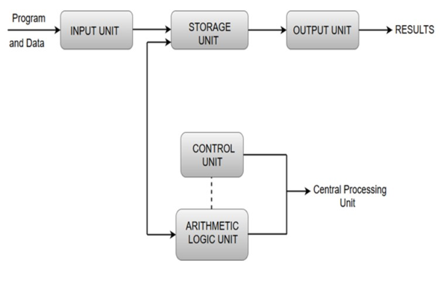

Functional Units of Digital System
- A computer organization describes the functions and design of the various units of a digital system.
- A general-purpose computer system is the best-known example of a digital system. Other examples include
telephone switching exchanges, digital voltmeters, digital counters, electronic calculators and digital
displays.
- Computer architecture deals with the specification of the instruction set and the hardware units that
implement the instructions.
- Computer hardware consists of electronic circuits, displays, magnetic and optic storage media and also the
communication facilities.
- Functional units are a part of a CPU that performs the operations and calculations called for by the
computer program.
- Functional units of a computer system are parts of the CPU (Central Processing Unit) that performs the
operations and calculations called for by the computer program. A computer consists of five main components
namely, Input unit, Central Processing Unit, Memory unit Arithmetic & logical unit, Control unit and an
Output unit.

Input unit
- Input units are used by the computer to read the data. The most commonly used input devices are keyboards,
mouse, joysticks, trackballs, microphones, etc.
- the most well-known input device is a keyboard. Whenever a key is pressed, the corresponding letter or
digit is automatically translated into its corresponding binary code and transmitted over a cable to either
the memory or the processor.
Central processing unit
- Central processing unit commonly known as CPU can be referred as an electronic circuitry within a computer
that carries out the instructions given by a computer program by performing the basic arithmetic, logical,
control and input/output (I/O) operations specified by the instructions.
Memory unit
- The Memory unit can be referred to as the storage area in which programs are kept which are running, and
that contains data needed by the running programs.
- Memory unit can be categorized in two ways namely, primary memory and secondary memory.
- It enables a processor to access running execution applications and services that are temporarily stored in
a specific memory location.
- Primary storage is the fastest memory that operates at electronic speeds. Primary memory contains a large
number of semiconductor storage cells, capable of storing a bit of information. The word length of a
computer is between 16-64 bits.
- It is also known as the volatile form of memory, means when the computer is shut down, anything contained in
RAM is lost.
- Cache memory is also a kind of memory which is used to fetch the data very soon. They are highly coupled
with the processor.
- The most common examples of primary memory are RAM and ROM.
- Secondary memory is used when a large amount of data and programs have to be stored for a long-term basis.
- It is also known as the Non-volatile memory form of memory, means the data is stored permanently
irrespective of shut down.
- The most common examples of secondary memory are magnetic disks, magnetic tapes, and optical disks.
Arithmetic & logical unit
- of all the arithmetic and logical operations of a computer are executed in the ALU (Arithmetic and Logical
Unit) of the processor. It performs arithmetic operations like addition, subtraction, multiplication,
division and also the logical operations like AND, OR, NOT operations.
Control unit
- The control unit is a component of a computer's central processing unit that coordinates the operation of
the processor. It tells the computer's memory, arithmetic/logic unit and input and output devices how to
respond to a program's instructions.
- The control unit is also known as the nerve center of a computer system.
- Let's us consider an example of addition of two operands by the instruction given as Add LOCA, RO. This
instruction adds the memory location LOCA to the operand in the register RO and places the sum in the
register RO. This instruction internally performs several steps.
Output Unit
- The primary function of the output unit is to send the processed results to the user. Output devices display
information in a way that the user can understand.
- devices are pieces of equipment that are used to generate information or any other response processed by
the computer. These devices display information that has been held or generated within a computer.
The most common example of an output device is a monitor.